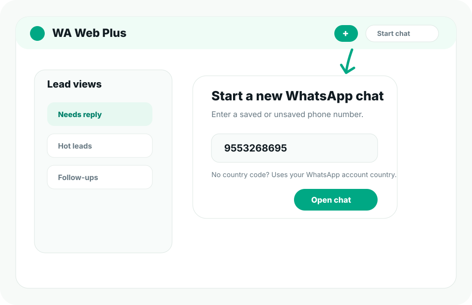

Unsaved numbers
Open a chat directly from a phone-number workflow.
New chat
Start chat conversations with numbers from websites, spreadsheets, ads, forms, or CRM exports without turning every lead into a saved contact first.

Workflow
Useful when your lead source gives you a number before a saved chat contact exists.
Open a chat directly from a phone-number workflow.
Use logged-in supported chat context when local numbers need a default country.
Move from lead list to first reply faster.
Keep the conversation inside the browser chat workspace where your team already works.
Pair the first outreach message with reusable reply templates.
Use notes, tags, and reminders after the chat is started.
Start from a spreadsheet, form submission, ad lead, or CRM export.
Check the country code or local-number behavior before opening the chat.
Use a template, tag the lead, and set the next action.
Guide
This workflow is built for teams that receive phone numbers from outside supported chat and need to start useful conversations quickly.
Ready
Install WA Web Plus and test unsaved-number messaging during the trial.